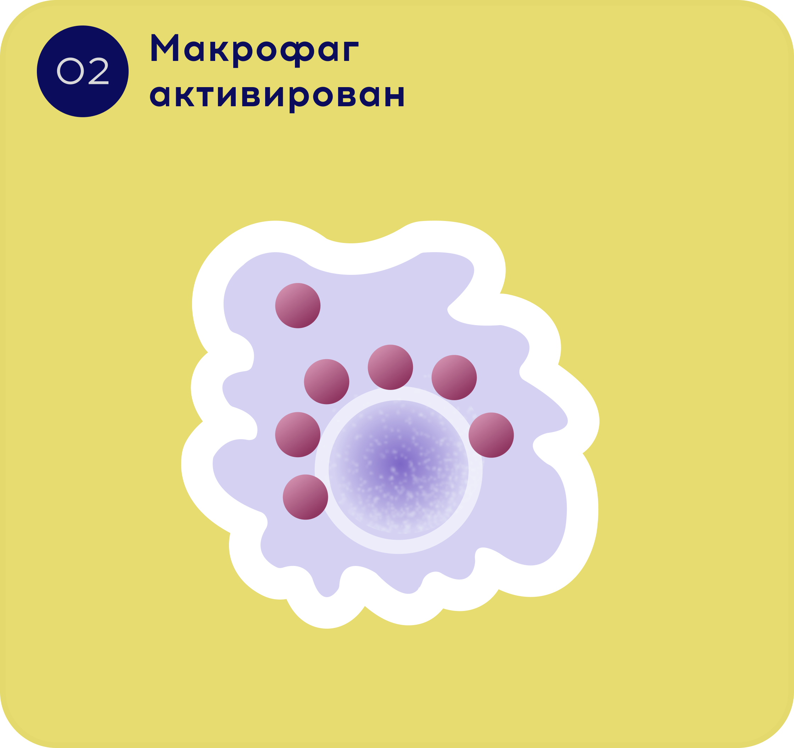

Научно-образовательный проект для врачей
Профилактика детских
болезней на 1-2-3

Знакомтесь, главный герой в профилактике детских заболеваний: Бета-глюкан!
Эксперт проекта
«Профилактика детских болезней на 1-2-3!»

Бета-глюкан является инновационным иммуномодулятором, это объясняется его механизмом действия:
Попадая в организм перорально, бета-глюканы захватываются слизистой оболочкой кишечника и активно переносятся в подслизистой слой (Пейеровые бляшки), где активируют макрофаги
и Т-лимфоциты. Активированные лимфоциты из слизистой оболочки кишечника диссеминируют в слизистые оболочки различных органов (в том числе дыхательных путей), обеспечивая, таким образом, их защиту от инфекций.

Являясь миммунным активатором β-глюканы повышают как специфический так и неспецифический иммунитет. Активизируя ,в первую очередь, макрофаги и другие иммунные клетки- Т-киллеры, Т-хелперы и НК-клетки, способствуют усиленному синтезу и высвобождению цитокинов (интерлейкины, интерферон)
β-глюкан увеличивает скорость созревания иммуно-компетентных клеток, активируя и значительно увеличивает их жизненный срок.
Показания к применению:
- Профилактика РИДП
- Кожные заболевания
- Аллергия
- ОРВИ и ГРИПП
- Синдром хронической усталости
Противопоказания
- Индивидуальная неперносимость
- Лица с пересадкой органов
В отличие других иммуномодулятор β-глюкан не вызывает аутоиммунные заболевания
Эксперт проекта «Профилактика детских болезней на 1-2-3!»
Уважаемый участник проекта, мы очень рады тому, что Вы
присоединились на наш научно-образовательный проект.
На протяжении всего проекта Вы будете получать разные
интерактивности от нашего эксперта:
Шамсиев Фуркат Мухитдинович
Профессор, главный детский пульмонолог Министерства здравоохранения
Республики Узбекистан. Руководитель отдела пульмонологии при НИИ
Педиатрии МЗ РУз.
В настоящее время на узбекском фармацевтическом рынке присутствует
высокотехнологичный продукт натурального происхождения, содержащий
бета-1,3/1,6-глюкан из экстракта Pleurotus ostreatus
разбор клинического случая и другие
видеотвиты

Эксперт проекта «Профилактика детских болезней на 1-2-3!»
ДЕФЕНСИКАН ИМУНОГЛЮКАН
производства «EURODRUG» LABARATORIES (Нидерланды)
Появление данного продукта в арсенале узбекских врачей может способствовать повышению эффективности терапевтических мероприятий при ведении пациентов с различными заболеваниями, требующими иммунокоррекции.
Спонсор научно-образовательного проекта компания «ARASHAN»
За дополнительной информацией обращаться:
OOO “ARASHAN” Узбекистан, г. Ташкент, ул. Чимкент -8
“ARASHAN”© 2023 | Все права защищены